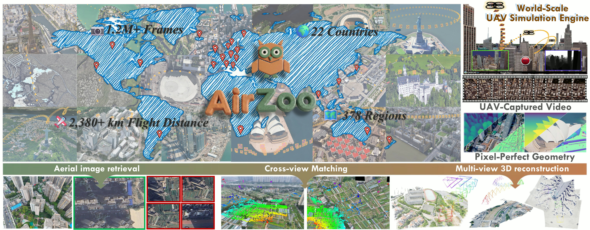
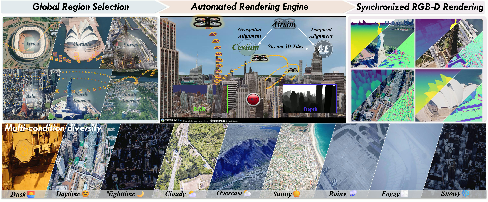
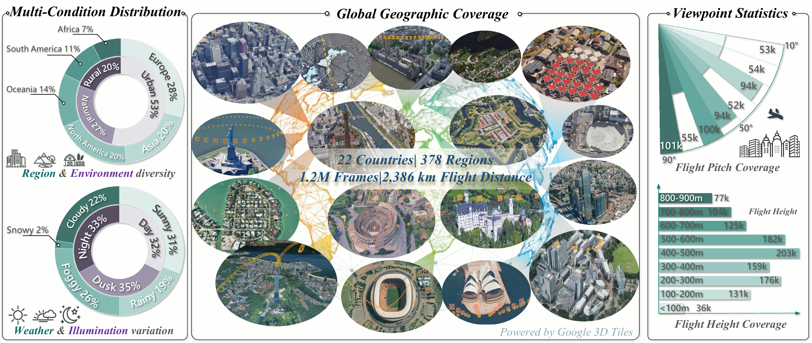
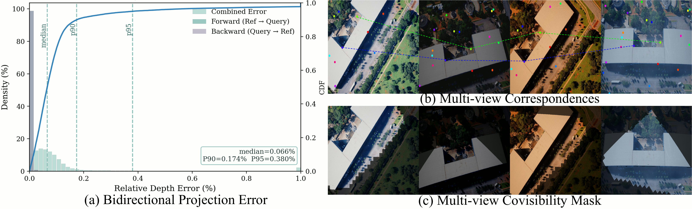
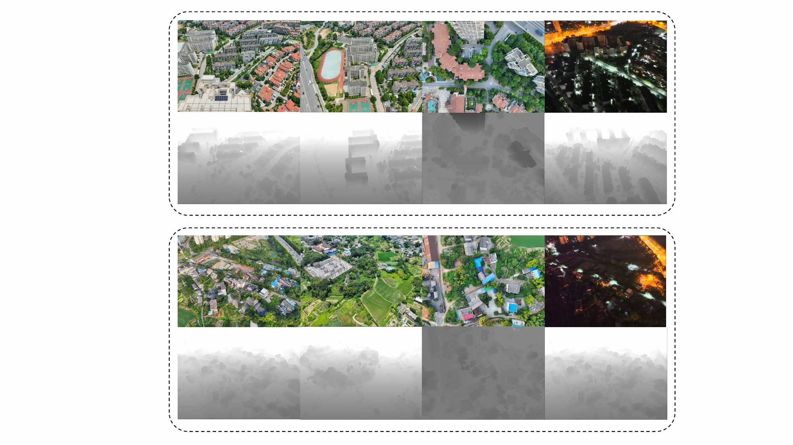
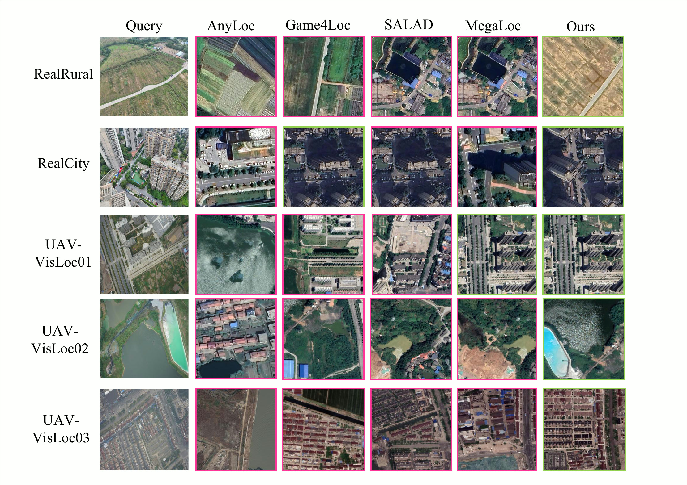
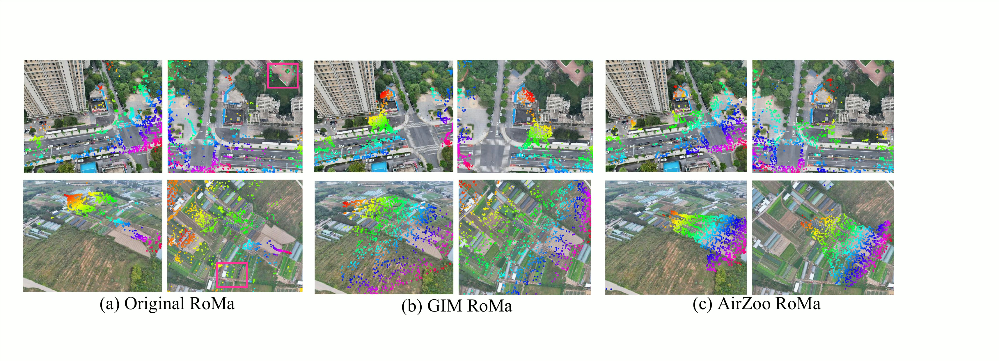
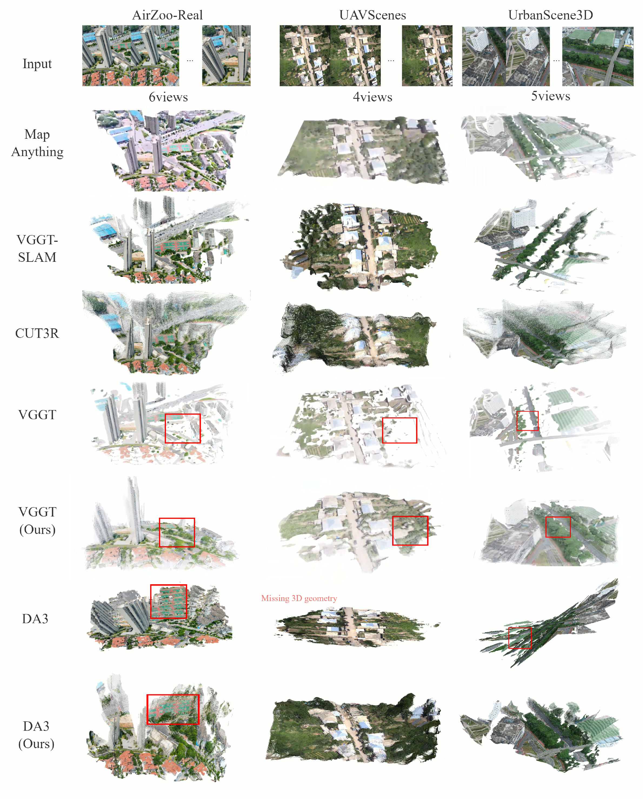

Despite rapid progress in data-driven 3D vision, aerial geometric 3D vision remains limited by the scarcity of large-scale, high-fidelity training data. AirZoo bridges this gap with a unified dataset and benchmark for UAV-based sensing. It combines a scalable generation pipeline built on world-scale photogrammetric 3D meshes, comprehensive scene diversity across 378 regions in 22 countries, and rich geometric annotations including pixel-aligned metric depth, camera intrinsics, and precise 6-DoF geo-referenced poses. Through aerial image retrieval, cross-view matching, and multi-view 3D reconstruction, AirZoo acts as a pre-training engine that improves state-of-the-art models such as MegaLoc, RoMa, VGGT, and Depth Anything 3 on real-world aerial benchmarks.

AirZoo uses Cesium for Unreal to stream Google 3D Tiles into UE5, then drives a custom AirSim-Cesium-Unreal simulator over global terrains. The pipeline logs continuous UAV video sequences rather than isolated screenshots, producing synchronized RGB images, dense metric depth, calibrated intrinsics, and Earth-fixed 6-DoF poses. Weather and illumination are systematically varied along the same trajectories, encouraging models to learn geometry that survives appearance changes.

The dataset contains over 1.2 million high-resolution frames at 1600 × 1200 pixels, collected from nearly 2,386 km of simulated flight trajectories. Each region is rendered under multiple weather and time-of-day conditions, while the camera envelope spans 0-800 m altitude and 10°-90° pitch angles, covering oblique-to-nadir UAV viewpoints.

Bidirectional projection checks report a 0.066% median relative depth error, with P90 at 0.174% and P95 at 0.380%.
AirZoo also evaluates real-flight transfer through AirZoo-Real, a collected benchmark with RTK-aligned UAV imagery. The reconstruction split includes 9,430 images from four areas captured across 06:00-08:00, 12:00-14:00, and 18:00-20:00, with extra 22:00-24:00 low-light flights for two scenes. The benchmark resources are available through the Evaluation Benchmarks link above.

Given a UAV query, the retrieval task finds the most relevant geo-tagged satellite tile under large viewpoint, scale, illumination, and seasonal changes. AirZoo fine-tuning improves top-rank retrieval quality, especially on the harder AirZoo-Real split with arbitrary UAV viewpoints.

Matching orthophoto references to oblique UAV imagery is central to UAV pose estimation. AirZoo exposes RoMa to difficult orthophoto-to-oblique pairs with controlled overlap, improving correspondence quality under altitude, viewpoint, and weather variation.

UAV sequences introduce wide baselines, strong oblique views, and lighting changes that ground-view training data rarely covers. Fine-tuning VGGT and DA3 on AirZoo consistently improves reconstruction performance across synthetic and real aerial evaluations.

@article{cheng2026airzoo,
author = {Cheng, Xiaoya and Wu, Rouwan and Liu, Xinyi and Cui, Zeyu and Liu, Yan and Zhao, Na and Liu, Yu and Zhang, Maojun and Yan, Shen},
title = {AirZoo: A Unified Large-Scale Dataset for Grounding Aerial Geometric 3D Vision},
journal = {arXiv preprint arXiv:2604.26567},
year = {2026},
url = {https://arxiv.org/abs/2604.26567}
}AirZoo is built with Cesium for Unreal, Unreal Engine 5, AirSim, and Google 3D Tiles. This website template is borrowed from longvolcap.